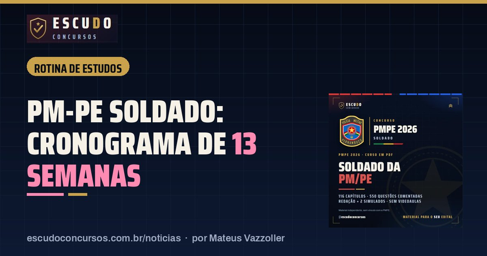

Cronograma de estudos PM-PE Soldado: 13 semanas até a prova de 21/02/2027
Rotina de estudosPublicado em 22 de novembro de 2026 · por Mateus Vazzoller, ESCUDO Concursos

Quem se inscreveu para vestir a farda da Polícia Militar de Pernambuco como Soldado (Praça QPMG) tem, a partir desta segunda, 23/11, exatamente 13 semanas até a prova objetiva e a redação do Instituto AOCP, no domingo, 21/02/2027, de manhã. Este plano reparte 15 horas por semana entre as seis disciplinas e a redação, começa pelo Bloco III, que é o primeiro critério de nota no desempate, e reserva as cinco últimas semanas para simulado e revisão.
| Cargo | Soldado da Polícia Militar de Pernambuco (Praça QPMG) |
|---|---|
| Prova objetiva e redação | 21/02/2027, de manhã, 5 horas |
| Tempo até a prova | 13 semanas, de 23/11/2026 a 21/02/2027 |
| Carga sugerida | 15 horas por semana |
| Prova | 60 questões de A a E em 3 blocos, mais redação de 40 pontos |
| Mínimos | 6 pontos em cada bloco, 18 na objetiva e 12 na redação |
Curso ESCUDO Soldado da PM de Pernambuco em PDF: 116 capítulos e 550 questões comentadas, Redação e 2 simulados, de acordo com o edital. R$ 47.
Ver o curso
Antes de começar: a sua inscrição foi deferida?
A retificação de 14/10/2026 levou o fim das inscrições para as 14h de 23/11/2026 e empurrou o cronograma: a lista de inscrições deferidas sai em 04/12/2026, e o recurso contra o indeferimento vai de 0h de 07/12 às 23h59 de 09/12/2026, na página do concurso no site do Instituto AOCP. Confira o seu nome assim que a lista sair. O resultado depois dos recursos está previsto para 18/12/2026.
Como dividir 15 horas por semana?
Na PM-PE todas as questões valem 1 ponto, então o tempo não segue o peso, e sim o tamanho do programa e o risco de eliminação. Direitos Humanos e Legislação Extravagante tem a lista mais longa de leis, e História de Pernambuco é conteúdo que quase ninguém traz de outros concursos. A redação vale 40 dos 100 pontos e entra toda semana.
| Disciplina | Bloco | Questões | Horas por semana |
|---|---|---|---|
| Direitos Humanos e Legislação Extravagante | III | 10 | 3h |
| Direito Constitucional | III | 10 | 2h30 |
| História de Pernambuco | I | 10 | 2h30 |
| Língua Portuguesa | I | 10 | 2h |
| Raciocínio Lógico | II | 10 | 2h |
| Informática | II | 10 | 1h30 |
| Redação | 40 pontos | 1h30 | |
| Total | 60 questões | 15h |
Nenhuma disciplina sai da agenda: o edital elimina quem zera qualquer uma delas ou fica abaixo de 6 pontos em um bloco, mesmo com nota alta no total.
Semana a semana até a prova
O Bloco III vem primeiro e anda com História de Pernambuco, porque os dois pedem leitura e memória e rendem pouco se forem deixados para o fim. O ECA, o Estatuto da Juventude e a Maria da Penha entram cedo: a Lei estadual nº 18.926/2025 tornou esses três temas obrigatórios nas provas de segurança pública de Pernambuco.
| Semana | Período | Bloco III | História de Pernambuco |
|---|---|---|---|
| 1 | 23/11 a 29/11 | Constitucional: princípios fundamentais e direitos individuais. Direitos Humanos: teoria geral e gerações | Ocupação e colonização, Capitanias Hereditárias e Duarte Coelho |
| 2 | 30/11 a 06/12 | Constitucional: direitos sociais, nacionalidade, direitos políticos e remédios. Tratados, Declaração Universal e Pacto de San José | O açúcar e a formação de Olinda e Recife |
| 3 | 07/12 a 13/12 | Constitucional: organização do Estado e competências. ECA (Lei nº 8.069/1990), com foco na atuação policial | A presença holandesa e o governo de Maurício de Nassau |
| 4 | 14/12 a 20/12 | Constitucional: Administração Pública e militares dos Estados. Estatuto da Juventude e Maria da Penha | Quilombos, Insurreição Pernambucana (1654) e Guerra dos Mascates (1710) |
| 5 | 21/12 a 27/12 | Constitucional: Poderes Legislativo e Executivo. Abuso de Autoridade e Lei de Tortura. Semana do Natal: manter ao menos as questões | Revolução de 1817 e Confederação do Equador (1824) |
| 6 | 28/12 a 03/01 | Constitucional: Poder Judiciário e Funções Essenciais à Justiça. Crimes Hediondos e Lei de Drogas | Guerra dos Cabanos (1835) e Revolução Praieira (1848) |
| 7 | 04/01 a 10/01 | Constitucional: defesa do Estado. Lei nº 7.716/1989 e Crimes Ambientais | Pernambuco no período republicano |
| 8 | 11/01 a 17/01 | Estatuto dos Policiais Militares de Pernambuco (Lei nº 6.783/1974) e Estatuto da Pessoa Idosa | Frevo, maracatu, festas populares e aspectos afro-brasileiros |
| 9 | 18/01 a 24/01 | Revisão do Bloco III só por questões | Linha do tempo dos movimentos, de 1654 a 1848 |
| 10 | 25/01 a 31/01 | Primeiro simulado completo | Revisão dos erros do simulado |
| 11 | 01/02 a 07/02 | Segundo simulado; conferir o local de prova no edital de 02/02/2027 | Só os blocos em que o simulado foi pior |
| 12 | 08/02 a 14/02 | Terceiro simulado | Revisão dos resumos e dos erros |
| 13 | 15/02 a 21/02 | Cartão de informação em 15/02/2027; revisão leve | Descanso na véspera, 20/02; prova em 21/02 |
Português, Raciocínio Lógico e Informática entram toda semana em doses menores: interpretação e gramática um pouco por dia, um tema de lógica por semana (proposições e conectivos, argumentação, diagramas, contagem e probabilidade) e um de Informática (internet, segurança, backup, Windows 11, Office 2019 e LibreOffice 7). Até a semana 8, metade do tempo é teoria e metade é questão. Da semana 9 em diante, não entra conteúdo novo.
Como encaixar a redação?
A redação é dissertativo-argumentativa, de 15 a 20 linhas, e vale 40 pontos em quatro aspectos de 10: tema e argumentação, coesão e coerência, estrutura do texto e modalidade gramatical. O mínimo é de 12 pontos. Escreva uma por semana, à mão e no limite de linhas, e corrija pelos quatro aspectos. Nas semanas 1 a 3, o foco é a estrutura; daí em diante, temas ligados à segurança pública e à cidadania, como os que aparecem no próprio programa.
Lembre que a redação só é corrigida para quem passa na objetiva e fica até a 4.866ª posição na ampla concorrência. A objetiva vem primeiro, mas quem chega à correção sem treino perde a vaga ali.
Como fazer os simulados das semanas 10 a 12?
- Faça as 60 questões e a redação de uma vez, de manhã, em 5 horas, como no dia da prova. Separando 1 hora para a redação, sobram 4 minutos por questão.
- Corrija pela régua do edital: pelo menos 6 pontos em cada bloco de 20, nenhuma disciplina zerada e 18 pontos na objetiva.
- Some à parte os pontos do Bloco III e de Língua Portuguesa: depois da idade, são os primeiros critérios de desempate.
- Anote o bloco que mais tirou pontos e leve a semana seguinte inteira para ele.
O curso ESCUDO para a PM-PE traz 2 simulados no formato da prova, com redação, e o Simulado 2 é liberado na semana da prova, para o último teste.
E o treino físico?
O TAF só vem depois dos exames médicos, mas tem natação de 50 metros, e nado não se aprende em poucas semanas. Encaixe dois ou três treinos curtos por semana desde já, fora das 15 horas de estudo, alternando piscina, corrida e barra. Os índices de cada teste estão no guia do concurso.
E se eu só tiver 8 horas por semana?
Mantenha a ordem das semanas e corte em proporção: Bloco III com 3h, Bloco I com 2h, Bloco II com 1h30 e redação com 1h30. O Bloco III continua com a maior fatia, porque decide o desempate logo depois da idade.
Curso ESCUDO Soldado da PM de Pernambuco em PDF: 116 capítulos e 550 questões comentadas, Redação e 2 simulados, de acordo com o edital. R$ 47.
Ver o curso
Perguntas frequentes
Quando é a prova da PM-PE para Soldado?
A prova objetiva e a redação são no domingo, 21/02/2027, de manhã, com 5 horas de duração. O edital com o local e o horário sai em 02/02/2027.
Qual matéria estudar primeiro para a PM-PE?
O Bloco III, com Direito Constitucional e Direitos Humanos e Legislação Extravagante, junto com História de Pernambuco. O ECA, o Estatuto da Juventude e a Maria da Penha devem entrar cedo, porque a Lei estadual nº 18.926/2025 tornou esses temas obrigatórios.
Quantos pontos preciso fazer na prova do Instituto AOCP?
Pelo menos 6 pontos em cada bloco de 20 questões, nenhuma disciplina zerada e 18 dos 60 pontos da objetiva. Na redação, o mínimo é de 12 dos 40 pontos.
Leia também
- Rotina de estudosCronograma de estudos GCM Salvador: 7 semanas até a prova da FGV de 17/01/2027
27 de novembro de 2026 · Plano de 7 semanas para a prova da FGV de 17/01/2027 para Guarda Civil Municipal de Salvador: 14 horas por semana, legislação de Salvador primeiro e corte por módulo.
- Rotina de estudosCronograma de estudos PC-PE Agente: 14 semanas até a prova de 07/03/2027
26 de novembro de 2026 · Plano de 14 semanas até a prova do Cebraspe de 07/03/2027 para Agente da PC-PE: 15 horas por semana, Contabilidade cedo e redação toda semana.
- Rotina de estudosCronograma de estudos Policial Penal PE: 16 semanas até a prova de 21/03/2027
25 de novembro de 2026 · Plano de 16 semanas para a prova do Cebraspe de 21/03/2027 para Policial Penal de Pernambuco: 15 horas por semana, Execução Penal primeiro e discursiva semanal.
Guia completo do concurso: edital, vagas e o que cai · Mais notícias e dicas de concursos